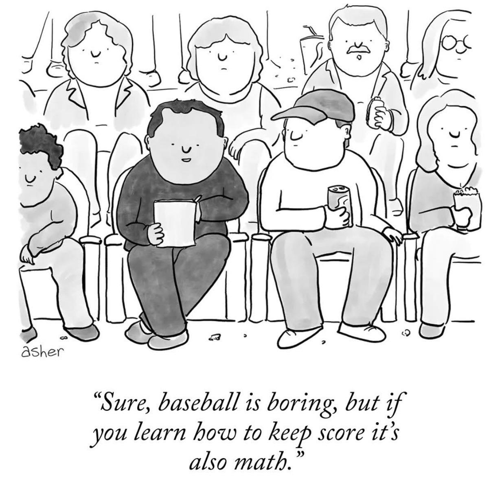

| About |
|---|
| full-count is a keyboard-driven TUI for scoring baseball games in real time. It is written in Rust and built for fast, no-mouse scorekeeping. |
| Quick Start |
|---|
cargo build --release
./target/release/full-count
./target/release/full-count --load cubs-vs-sox
./target/release/full-count --load cubs-vs-sox --replay
|
| Main Keys |
|---|
|
Made with old school HTML only.